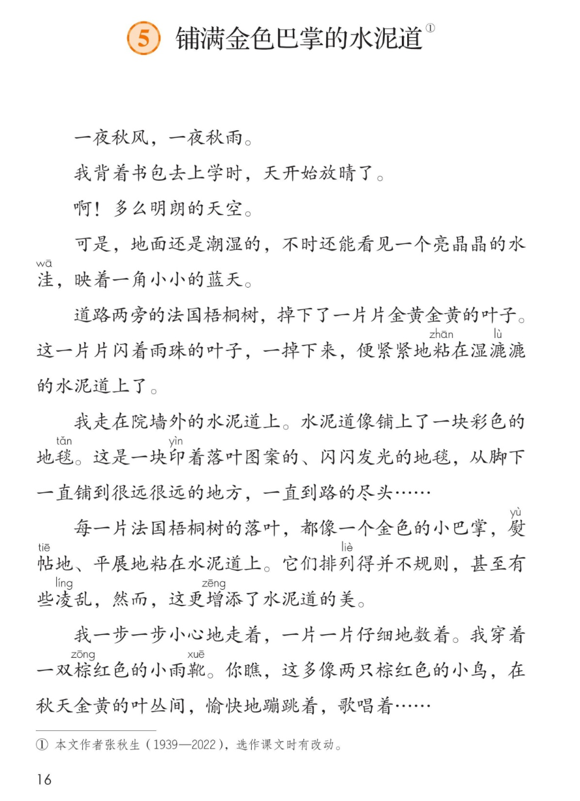
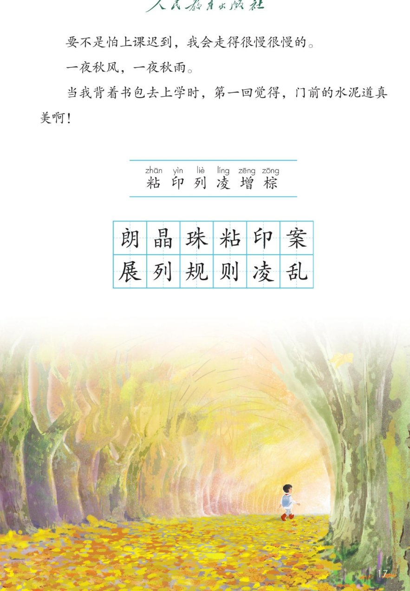
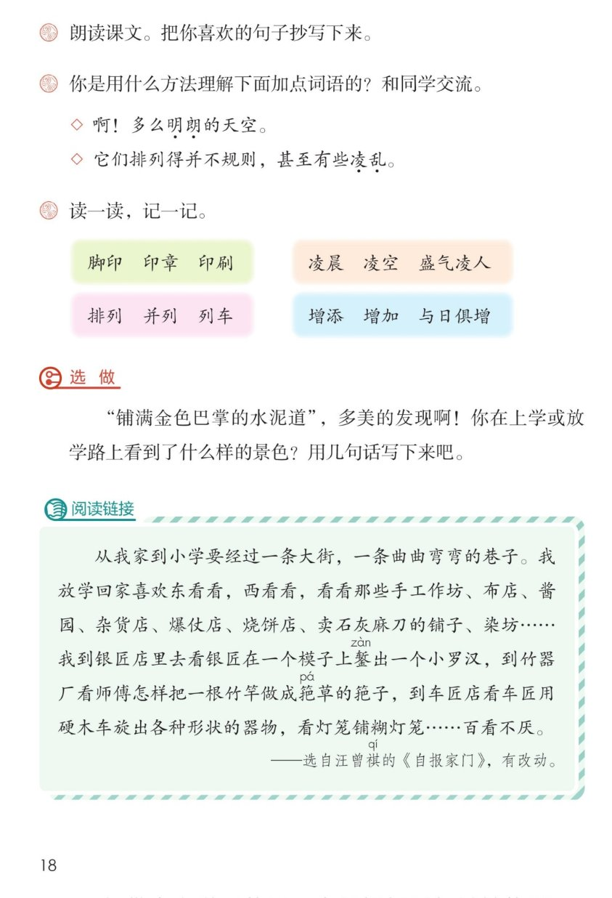

×
🔊 手机听不到声音怎么办？
① 先把手机
媒体音量调大 ，确认没开静音、没连蓝牙耳机；在微信里打开的，点右上角「⋯ → 用浏览器打开」。
② 还是没声音？到应用商店免费下载
Microsoft Edge 浏览器 （它自带朗读发声），用它打开本页面就能出声。
③ 换了 Edge 仍然没声音，说明这部手机的
硬件/系统不支持 网页朗读（多为老旧机型）；近几年买的新手机一般都能正常播放。
→ 打开声音自检
📖 第 5 课《铺满金色巴掌的水泥道》· 有声图文带读
统编版语文 · 第二单元·阅读 · 课本 P16~18 · 作者：张秋生 · 素养升级版（对标 2022 课标第二学段）
课文 11 个自然段
素养目标 4
会认字 6
会写字 12
听写词 12
深入理解 8 题
本课本领 多种方法理解难懂的词语
🎧 这样学（可随时点任意一句、一个字、一个词单独听）： ① 听读课文 ——一句一句读，读到哪一句哪一句发光；再试着自己默读 。② 学字词 ——6 个会认字、12 个会写字，点一个读一个（注意“粘”是多音字）。③ 词语·听写 ——听写 12 个词（读两遍→你写→报答案→听示范句），再听 4 组近义词辨析。④ 深入理解 ——8 道题（认知 / 理解 / 运用 / 拓展），先想后看。⑤ 顺序与朗读 ——按顺序听课文画面，再听旁白和小作者分角色朗读。🌟 课后要求（教材原话）：朗读课文。把你喜欢的句子抄写下来。
📌 本单元语文要素 ——人文主题：金秋的阳光，洒在树叶上，洒在花瓣上，也洒在我们的心上；阅读：运用多种方法理解难懂的词语 ；习作：学习写日记 。
🀄 文化自信
🀄 文化自信
品味张秋生笔下“金色巴掌”“彩色地毯”这样鲜活的语言，感受祖国语言文字的美。
🗣 语言运用
🗣 语言运用
认识 6 个生字、会写 12 个字；积累“亮晶晶、金黄金黄”等词语，用多种方法理解难懂的词语。
💡 思维能力
💡 思维能力
默读课文，边读边想象画面，说出用什么方法理解“明朗、凌乱”等词语。
🎨 审美创造
🎨 审美创造
发现上学路上雨后水泥道的美，把你喜欢的句子抄写下来，学着去发现身边的美。
点段前的 ①~⑪ 听整段
🔁 跟读模式：关
👁 隐藏注音（自测用）
字卡上的拼音标的是本课要认的字，读音来自课本生字表
🎤 朗读要求（老师标准） 粘 是多音字，课文里读第一声；对水泥道的喜爱 ，开头结尾“一夜秋风，一夜秋雨”读得轻缓；想象画面 ：水洼、彩色地毯、金色的小巴掌、小鸟一样的雨靴；真美啊 ”，读出发自内心的赞叹。
🤫 默读小提示（边读边想象画面） 听读 ——点句子听老师读；第二步 默读 ——不出声、不指读，边读边想水泥道美在哪里；第三步 圈一圈 ——画出喜欢的句子抄下来，难懂的词语用方法理解。
①
一夜秋风，一夜秋雨。
📌 这一段讲：课文开头说：一夜秋风，一夜秋雨——点明秋天来了。
②
我背着书包去上学时，天开始放晴了。
📌 这一段讲：我背着书包去上学，天开始放晴了。
③
啊！多么明朗的天空。
📌 这一段讲：雨后的天空又明亮又晴朗。
④
可是，地面还是潮湿的，不时还能看见一个亮晶晶的水洼，映着一角小小的蓝天。
📌 这一段讲：地面还潮湿，亮晶晶的水洼映着一角小小的蓝天。
⑤
道路两旁的法国梧桐树，掉下了一片片金黄金黄的叶子。
这一片片闪着雨珠的叶子，一掉下来，便紧紧地粘在湿漉漉的水泥道上了。
📌 这一段讲：法国梧桐的金黄叶子掉下来，紧紧粘在湿漉漉的水泥道上。
⑥
我走在院墙外的水泥道上。
水泥道像铺上了一块彩色的地毯。
这是一块印着落叶图案的、闪闪发光的地毯，从脚下一直铺到很远很远的地方，一直到路的尽头……
📌 这一段讲：我走在水泥道上，它像一块印着落叶图案的、闪闪发光的彩色地毯。
⑦
每一片法国梧桐树的落叶，都像一个金色的小巴掌，熨帖地、平展地粘在水泥道上。
它们排列得并不规则，甚至有些凌乱，然而，这更增添了水泥道的美。
📌 这一段讲：落叶像金色的小巴掌，熨帖地、平展地粘着；排列虽凌乱，却更增添了水泥道的美。
⑧
我一步一步小心地走着，一片一片仔细地数着。
我穿着一双棕红色的小雨靴。
你瞧，这多像两只棕红色的小鸟，在秋天金黄的叶丛间，愉快地蹦跳着，歌唱着……
📌 这一段讲：我的棕红色小雨靴，像两只小鸟在金黄的叶丛间蹦跳、歌唱。
⑨
要不是怕上课迟到，我会走得很慢很慢的。
📌 这一段讲：要不是怕上课迟到，我会走得很慢很慢的——多喜欢这条路呀。
⑩
一夜秋风，一夜秋雨。
📌 这一段讲：一夜秋风，一夜秋雨——又出现了，和开头呼应。
⑪
当我背着书包去上学时，第一回觉得，门前的水泥道真美啊！
📌 这一段讲：第一回觉得，门前的水泥道真美啊！
🤔 想一想（点我可跳过）
点一张图，听读整页

第 16 页 · 课文（上）

第 17 页 · 课文（下）与生字

第 18 页 · 课后练习与阅读链接
📖 人教版《语文》三年级上册 · 课本第 16~18 页 · 图片仅供个人学习，版权归人民教育出版社所有
📚 注释① 本文作者张秋生（1939—2022） ，选作课文时有改动。
🔊 课后题 1
🔍 课后题 2明朗 的天空。◇ 它们排列得并不规则，甚至有些凌乱 。
📖 课后题 3
汪曾祺看什么都“百看不厌”
🔗 阅读链接 錾 出一个小罗汉，到竹器厂看师傅怎样把一根竹竿做成筢 草的筢子，到车匠店看车匠用硬木车旋出各种形状的器物，看灯笼铺糊灯笼……百看不厌 。
点一个字，听读音、词语和在课文里的句子（粘是多音字，注意听）
结构、部首、笔画与书写提示为通用规范，供参考，以教材和老师的指导为准
朗lǎng
明朗
左右 · 月 · 10画
左边良字最后一笔变提，右边月字旁要写窄长。
晶jīng
亮晶晶
品字 · 日 · 12画
三个日字上小下大，上面的日居中，下面的两个日要写得匀称。
珠zhū
雨珠
左右 · 王 · 10画
王字旁最后一横变提，右边的朱字撇捺要舒展。
粘zhān
粘住
左右 · 米 · 11画
米字旁最后一笔变点，右边的占字上横要写长托住口。
印yìn
印章
左右 · 卩 · 5画
左边是提和一撇，不要写成两横；右边的单耳旁竖画要正。
案àn
图案
上下 · 木 · 10画
上面安字要写扁，盖住下面的木字，木字竖画写在正中。
展zhǎn
平展
半包围 · 尸 · 10画
尸字头要写得舒展，里面的部分四笔写紧凑，最后捺要伸展。
列liè
排列
左右 · 刂 · 6画
左边歹字横撇要写清，右边立刀旁竖钩要挺直。
规guī
规则
左右 · 见 · 8画
左边夫字捺变点，右边见字竖撇和竖弯钩要写开。
则zé
规则
左右 · 刂 · 6画
左边贝字要写窄，最后一笔是点；右边立刀旁竖长竖短。
凌líng
凌乱
左右 · 冫 · 10画
两点水要写得靠上，右边的部分横画多，间距要匀。
乱luàn
凌乱
左右 · 乙 · 7画
左边舌头要写窄长，右边竖弯钩要写得舒展有力。
点一行，听读这一组词语
印 脚印 印章 印刷
凌 凌晨 凌空 盛气凌人
列 排列 并列 列车
增 增添 增加 与日俱增
读两遍 → 你在纸上写 → 报答案 → 听示范句
准备听写 · 共 12 个词
○ ○ ○
点下面的「开始听写」，听到一个词就写一个词。
▶ 开始听写
🔁 再读一遍
👁 看答案
点词听读，点句子听示范句，再自己说一句
1 明朗 课文词
示范句：雨后的天空多么明朗。
✏️ 我也能说：什么明朗。
2 亮晶晶 课文词
示范句：亮晶晶的水洼映着蓝天。
✏️ 我也能说：什么亮晶晶。
3 雨珠 课文词
示范句：叶子上闪着雨珠。
✏️ 我也能说：什么闪着雨珠。
4 粘住 课文词
示范句：落叶紧紧粘在水泥道上。
✏️ 我也能说：什么粘在哪里。
5 印章 课文词
示范句：落叶像盖在路上的印章。
✏️ 我也能说：什么像印章。
6 图案 课文词
示范句：地毯上印着落叶图案。
✏️ 我也能说：什么印着图案。
7 平展 课文词
示范句：落叶平展地粘在路上。
✏️ 我也能说：什么平展。
8 排列 课文词
示范句：落叶排列得并不规则。
✏️ 我也能说：什么排列得怎么样。
9 规则 课文词
示范句：它们排列得并不规则。
✏️ 我也能说：什么不规则。
10 凌乱 课文词
示范句：落叶甚至有些凌乱。
✏️ 我也能说：什么凌乱。
11 湿漉漉 课文词
示范句：湿漉漉的水泥道闪闪发光。
✏️ 我也能说：什么湿漉漉。
12 金黄金黄 课文词
示范句：叶子金黄金黄的。
✏️ 我也能说：什么金黄金黄。
相同点 / 不一样在哪 / 各造一句
明朗 — 晴朗
相同：都表示天空明亮、天气好。
不一样：明朗 还表示又亮又爽朗，不只说天气；晴朗 专指没有云雾。
明朗：多么明朗的天空。
凌乱 — 杂乱
相同：都表示不整齐、没有条理。
不一样：凌乱 偏重不整齐、七零八落；杂乱 偏重混在一起、又多又乱。
凌乱：落叶排列得有些凌乱。
增添 — 增加
相同：都表示在原有基础上变多。
不一样：增添 常用于气氛、色彩、美这类抽象的；增加 常用于数量。
增添：这更增添了水泥道的美。
愉快 — 快乐
相同：都表示心里高兴、舒畅。
不一样：愉快 偏重心情轻松舒畅；快乐 偏重欢喜、开心。
愉快：小雨靴愉快地蹦跳。
ABB式词语 亮晶晶 湿漉漉 金灿灿
ABAB式词语 金黄金黄 火红火红 雪白雪白
比喻句 水泥道像彩色的地毯——落叶像金色的小巴掌——雨靴像两只小鸟
首尾呼应 一夜秋风，一夜秋雨——开头和结尾各出现一次
点一张卡，听一种方法
课后题2问我们：你是用什么方法理解“明朗”“凌乱”的？ 下面把课文里的难懂词语一个一个来“破案”——四样法宝轮着用。
📖 方法一·联系上下文
“明朗”——上文说“天开始放晴了”，所以天空又明亮又晴朗。
🔍 方法二·查字典
“熨帖”——查一查，是平平整整、服服帖帖的意思，落叶乖乖粘在路上。
🔄 方法三·找反义词
“凌乱”——和“整齐”相反，不整齐、七零八落。
👀 方法四·联系生活
“亮晶晶的水洼”——想想雨后路边的积水，亮亮的，映着天。
💎 新鲜比喻
水泥道像彩色地毯，落叶像金色的小巴掌，雨靴像两只小鸟。
🔁 首尾呼应
“一夜秋风，一夜秋雨”开头结尾各出现一次，读起来特别完整。
✏️ 圈画交流
把你喜欢的句子抄写下来（课后题1），说说它新鲜在哪里。🌈 答案不唯一。
标「答案不唯一」的题，说得有道理都对
认知 这篇课文的作者是谁？看解析
🤔 想一想
解析：
本文作者张秋生（1939—2022），选作课文时有改动（课本注释①）。
🌈 答案不唯一，说得有道理都对
认知 “明朗”是什么意思？你可以用什么方法弄懂它？看解析
🤔 想一想
解析：
明朗就是又明亮又晴朗。雨后天放晴了，天空特别亮——联系上文“天开始放晴了”就懂了。
🌈 答案不唯一，说得有道理都对
理解 “水泥道像铺上了一块彩色的地毯”，把什么比作什么？看解析
🤔 想一想
解析：
把铺满落叶的水泥道比作印着落叶图案的、闪闪发光的彩色地毯——落叶就是地毯上的图案。
🌈 答案不唯一，说得有道理都对
理解 你是用什么方法理解“凌乱”的？（课后题2）看解析
🤔 想一想
解析：
可以联系上下文：“排列得并不规则，甚至有些凌乱”，前后都在说排列，就知道凌乱是不整齐；也可以查字典，还可以找反义词“整齐”。🌈 方法不唯一。
🌈 答案不唯一，说得有道理都对
理解 “一夜秋风，一夜秋雨”在开头和结尾都出现了，有什么作用？看解析
🤔 想一想
解析：
这叫首尾呼应：开头点明秋天来了，结尾再唱一遍，把秋雨后的美和我的高兴连成一个圈，读起来特别完整。
🌈 答案不唯一，说得有道理都对
运用 照样子，用上“亮晶晶”“湿漉漉”写一写雨后的景物。看解析
🤔 想一想
解析：
示范：雨停了，树叶湿漉漉的，蜘蛛网上挂着亮晶晶的小水珠。🌈 答案不唯一，用上叠词写清楚就行。
🌈 答案不唯一，说得有道理都对
运用 （选做）你在上学或放学路上看到了什么样的景色？用几句话写下来吧。看解析
🤔 想一想
解析：
示范：上学路上，一排银杏树落下了黄黄的叶子，像给小路镶了一道金边。🌈 答案不唯一，写你真实看到的。
🌈 答案不唯一，说得有道理都对
拓展 阅读链接里，汪曾祺为什么对街上的店铺“百看不厌”？和你上学路上的发现比一比。看解析
🤔 想一想
解析：
因为他怀着一颗好奇的心，看什么都有意思——有一双会发现美的眼睛，处处都有风景。🌈 答案不唯一，说出自己的想法就行。
🌈 答案不唯一，说得有道理都对
💬 讲述支架：先 天放晴、水洼映蓝天 → 再 金黄叶子粘在湿漉漉的道上 → 接着 水泥道像彩色地毯 → 然后 落叶像金色的小巴掌 → 最后 雨靴像小鸟蹦跳歌唱，第一回觉得真美。
点一个角色，听他（她）的台词
🎭 旁白一
一夜秋风，一夜秋雨。我背着书包去上学时，天开始放晴了。啊！多么明朗的天空。可是，地面还是潮湿的，不时还能看见一个亮晶晶的水洼，映着一角小小的蓝天。
💬 读出喜爱与赞叹 ：开头结尾轻缓，写地毯、小巴掌的句子轻快，最后“真美啊”读出赞叹
🎭 小作者
道路两旁的法国梧桐树，掉下了一片片金黄金黄的叶子。我走在院墙外的水泥道上，水泥道像铺上了一块彩色的地毯。每一片落叶都像一个金色的小巴掌，这更增添了水泥道的美。
💬 读出喜爱与赞叹 ：开头结尾轻缓，写地毯、小巴掌的句子轻快，最后“真美啊”读出赞叹
🎭 旁白二
我一步一步小心地走着，一片一片仔细地数着。要不是怕上课迟到，我会走得很慢很慢的。一夜秋风，一夜秋雨。当我背着书包去上学时，第一回觉得，门前的水泥道真美啊！
💬 读出喜爱与赞叹 ：开头结尾轻缓，写地毯、小巴掌的句子轻快，最后“真美啊”读出赞叹
🎭 小老师
朗读小窍门：开头结尾的“一夜秋风，一夜秋雨”读得轻缓；写落叶、地毯的句子读出喜爱；最后“真美啊”读出发自内心的赞叹。你喜欢的句子记得抄写下来。
💬 读出喜爱与赞叹 ：开头结尾轻缓，写地毯、小巴掌的句子轻快，最后“真美啊”读出赞叹
每题给自己打 1~3 颗星
1. 我能正确认读本课 6 个会认字（分清“粘”的读音）。 ☆ ☆ ☆
2. 我能正确书写 12 个会写字。 ☆ ☆ ☆
3. 我能说出用什么方法理解“明朗、凌乱”等难懂的词语。 ☆ ☆ ☆
4. 我能说出水泥道美在哪里，把喜欢的句子抄写下来。 ☆ ☆ ☆
5. 我能边读边想象画面，读出对水泥道的喜爱。 ☆ ☆ ☆
✍️ “铺满金色巴掌的水泥道”，多美的发现啊！ 上学或放学路上 看到了什么样的景色？用几句话写下来吧。 在哪里、看到了什么、像什么 ，可以用上课文里的“金黄金黄、亮晶晶”。例 ：上学路上，一排银杏树落下了黄黄的叶子，像给小路镶了一道金边。